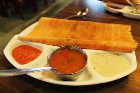

we suggest you to try masala dosa
Masala dosa or masale dose is a variation of the popular South Indian food dosa, which has its origins in Tuluva Mangalorean cuisine. It is made from rice, lentils, potato, methi, and curry leaves, and served with chutneys and sambar.
